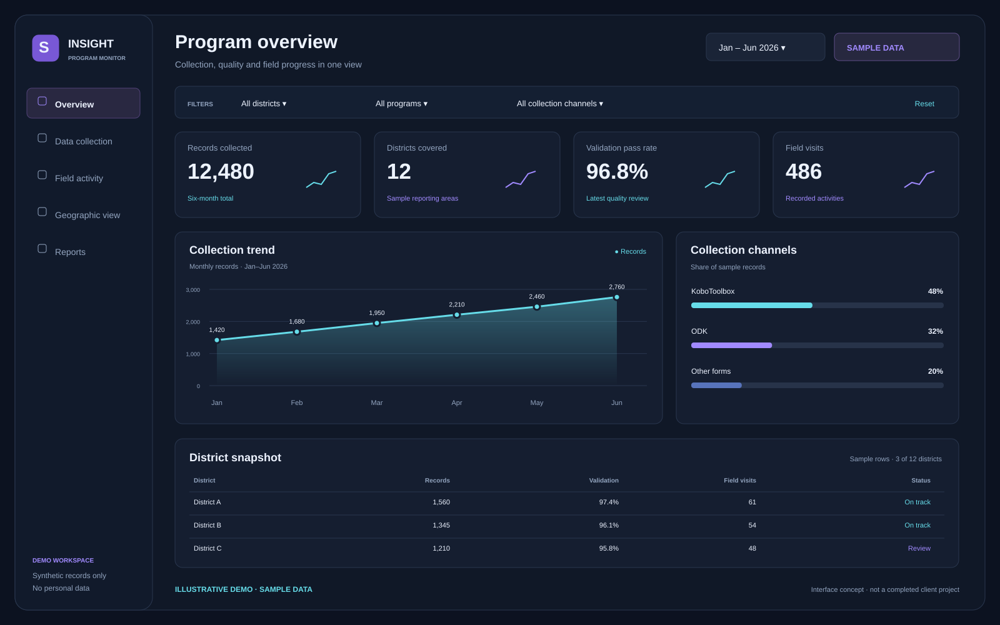

ILLUSTRATIVE DEMO · SAMPLE DATA Open full-size ↗Power BI · Advanced Excel · MIS
Program monitoring dashboard
I develop interactive dashboards and reports using Power BI and Advanced Excel to track KPIs, analyze trends and monitor program performance.
Collect program records → validate data → organize reporting tables → visualize progress
Enquire about this service ↗